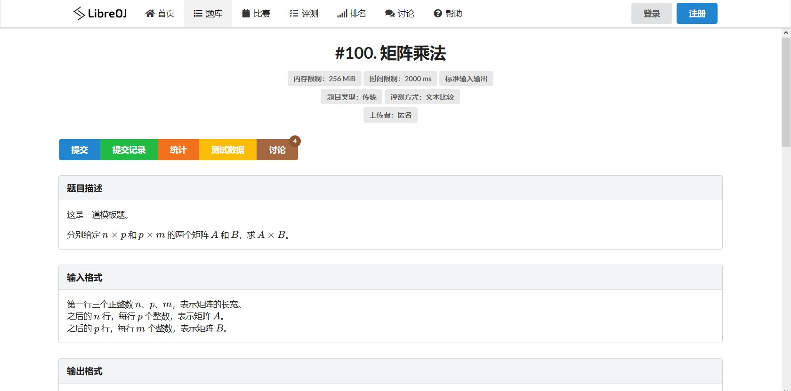
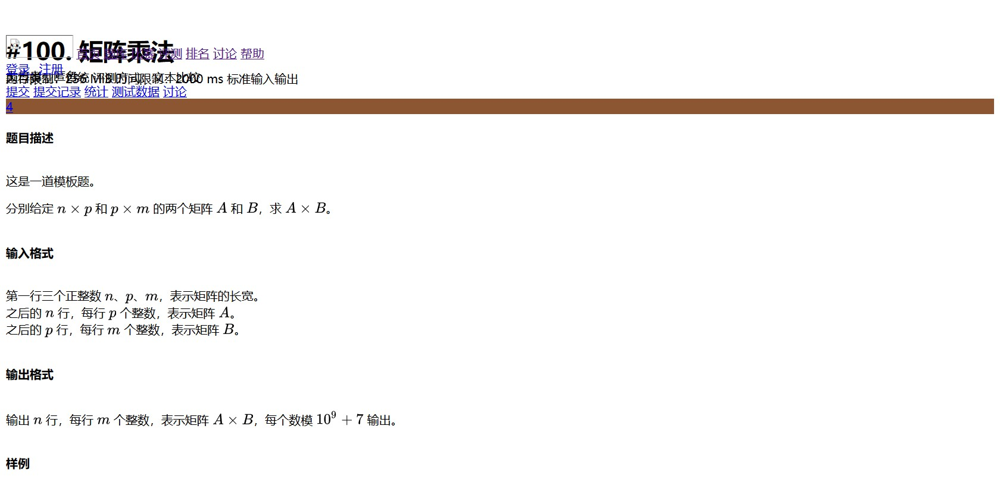

hhh
css教程
首页
html教程
css教程
关于
目录
css简介
css的创建
css的基本语法
css的id和class选择器
css的背景设置
css的文本设置
css的链接设置
css的列表设置
css的表格设置
css的盒子模型
css的边框设置
什么是CSS？
CSS指层叠样式表(
C
ascading
S
tyle
S
heets)
样式定义如何显示 HTML 元素
样式通常存储在样式表中
把样式添加到 HTML 4.0 中，是为了解决内容与表现分离的问题
外部样式表可以极大提高工作效率
外部样式表通常存储在 CSS 文件中
多个样式定义可层叠为一个
CSS功能有多强大？
看两张同一个网页的图就知道了 有css：

没有css：

可见css的强大之处了 点击左侧目录进入具体模块的学习吧！
css的创建